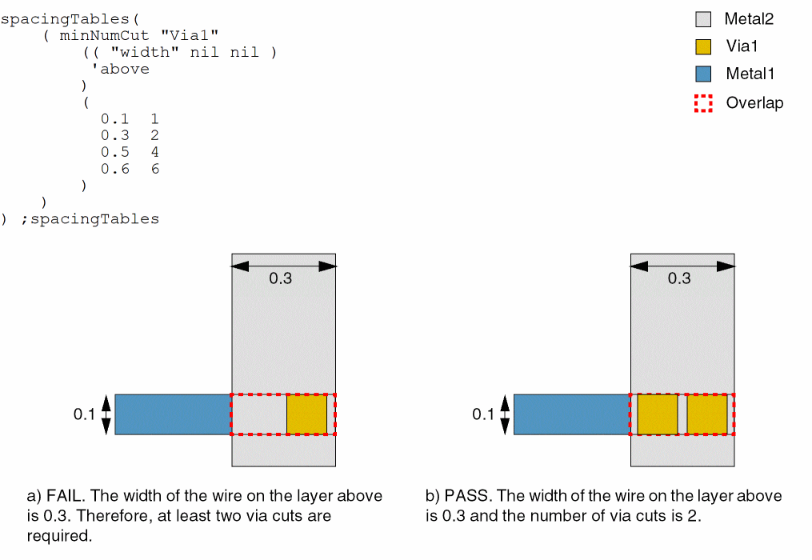
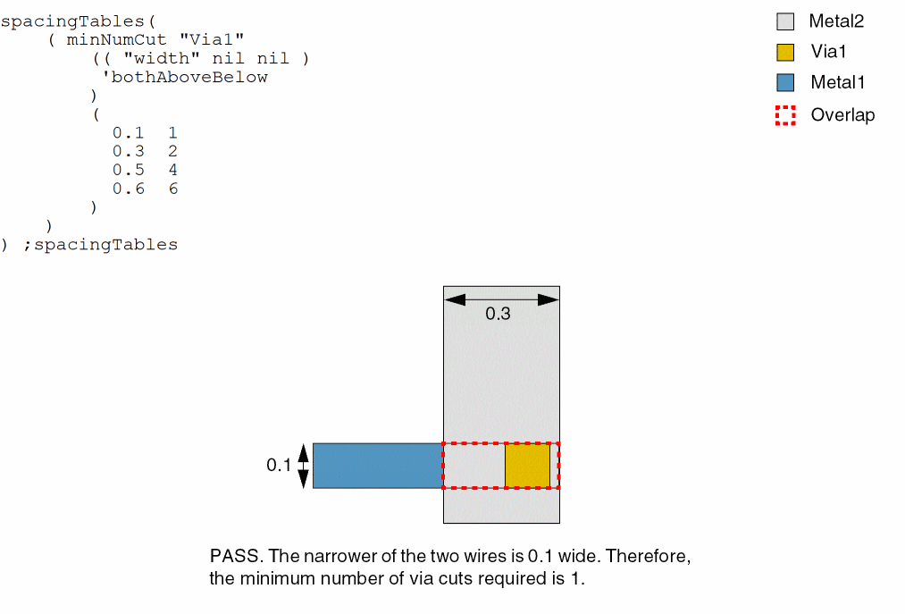

minNumCut
spacingTables( ( minNumCuttx_cutLayer(( "width" nil nil ) ['cutClass {f_cutWidth| (f_cutWidth f_cutLength) |t_name} ['diffCutClass]] ['distanceWithinf_within['manhattan]] ['above | 'below | 'bothAboveBelow] ['sameMetalOverlap | 'fullyEnclosed] [f_default] ['otherWidthg_otherWidth] ) (g_table) )
) ;spacingTables
Specifies the minimum number of cuts that a via object or a via instance must contain when connecting two wide wires or a wide wire and a pin. The number of via cuts required depends on the width of the wires. If 'distanceWithin is specified, only the via cuts that are within the specified distance from each other are counted.
Usually, wide wires carry more current, and if you change layers between two wide wires, you need a sufficient number of via cuts to carry an equivalent amount of current. Using multiple via cuts, instead of just one, also increases reliability.
The minNumCut constraint can be specified in the following constraint groups:
-
Wire Edit: The
minNumCutconstraint can be specified in a wire edit constraint group, which can then be set as the default constraint group for creating and editing wires by using either thewireConstraintGroupenvironment variable or by selecting it in the Options – Editor – Default Wire Constraint Group list. -
Foundry: The definition of
minNumCutin the wire edit constraint group overrides theminNumCutdefinition available in thefoundryconstraint group. -
Net: The
minNumCutconstraint can be specified for a particular net in a net constraint group. Currently, the router supports only a limited number of constraints in the net constraint group, includingminWidth,minNumCut,minSpacing,validLayers, andvalidVias.
Values
Parameters
|
The cut class to which the constraint applies, specified by width, by width and length, or by name (as defined in a cutClasses constraint). |
|
|
(Virtuoso Layout Suite EXL and higher tiers) This parameter specifies that if there is one cut belonging to the cut class in a wide wire, there must be at least the specified cut number minus 1 cuts not belonging to the cut class. |
|
|
The distance between the via cuts must be less than this value for the via cuts to be counted. |
|
|
(Virtuoso Layout Suite EXL and higher tiers) This parameter specifies that the within distance should be measured as a euclidian or manhattan. The default is euclidian. |
|
|
The wire that is used to determine the number of cuts required. By default, the number of cuts required is determined based on the width of the wider of the two wires.
|
|
|
The minimum number of cuts required is determined based on the width of the wider wire.
|
|
|
(Virtuoso Layout Suite EXL and higher tiers) The constraint applies only if the wire width on the other layer is less than the specified value. |
|
Examples
- Example 1: minNumCut with above
- Example 2: minNumCut with bothAboveBelow
- Example 3: minNumCut with sameMetalOverlap
- Example 4: minNumCut with fullyEnclosed
Example 1: minNumCut with above
The width of the wire on the layer above determines the number of cuts that a via must contain.
- Width >= 0.1; via cuts = 1
- Width >= 0.3; via cuts = 2
- Width >= 0.5; via cuts = 4
-
Width >= 0.6; via cuts = 6

Example 2: minNumCut with bothAboveBelow
The width of the wires on the layers above and below determine the number of cuts that a via must contain.
- Width >= 0.1; via cuts = 1
- Width >= 0.3; via cuts = 2
- Width >= 0.5; via cuts = 4
-
Width >= 0.6; via cuts = 6

Example 3: minNumCut with sameMetalOverlap
The width of the wider wire determines the number of cuts that a via must contain.
The via is contained in the overlap of the two wires, and this overlap partly covers the wider of the two wires.
Example 4: minNumCut with fullyEnclosed
The width of the wider wire determines the number of cuts that a via must contain.
All via cuts must be fully enclosed by the wide wire.
Return to top